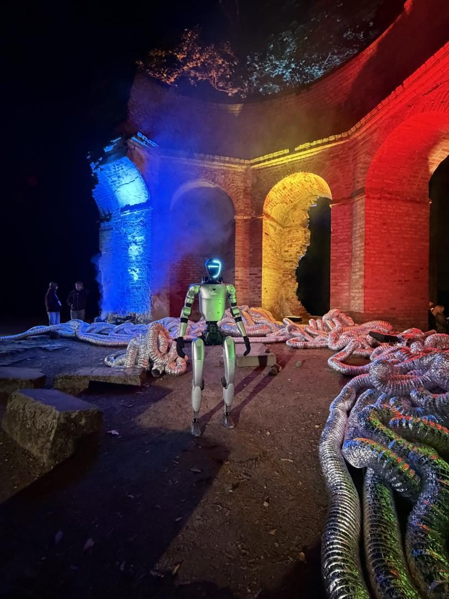
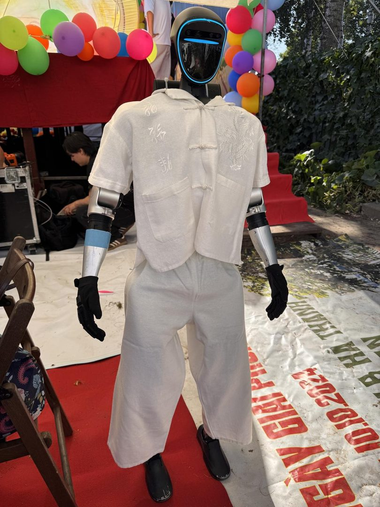

- Startseite
- Roboter für Privatfeiern
Humanoider Roboter · Unitree G1 · Show mit Operator
Roboter für Privatfeiern — Unitree G1
Premium-Hausparty, Geburtstag in der gemieteten Villa, private Feier im Garten — der humanoide Roboter ist die Attraktion, nach der Ihre Feier im Freundeskreis zur Legende wird.

Die Überraschung des Abends
Einen runden Geburtstag, ein Jubiläum oder ein Gartenfest plant man lange, und am Ende soll es einen Moment geben, mit dem niemand gerechnet hat. Ein humanoider Roboter, der zur Tür hereinkommt, das Geburtstagskind beim Namen nennt und gratuliert, ist so ein Moment.
Der Auftritt
Der Roboter kommt als unangekündigter Gast. Er begrüßt die Gastgeber, hält eine kurze Rede, die wir vorher mit Ihnen schreiben, und tanzt. Danach bleibt er bei den Gästen: für Fotos, Gespräche und eine Runde über die Tanzfläche.
Persönlich statt von der Stange
Vor der Feier spielen wir dem Roboter ein, was er wissen soll: Namen, Anekdoten, den Anlass. Er spricht Deutsch und jede andere Sprache, auch wenn die Familie aus mehreren Ländern anreist.
Sie feiern, wir kümmern uns
Der Operator bringt den Roboter, baut auf, steuert den Auftritt und achtet auf die Sicherheit. Sie brauchen nur ein paar Quadratmeter ebenen Boden und eine Steckdose, im Wohnzimmer, auf der Terrasse oder im Partyzelt.
Für welche privaten Anlässe?
- Runde Geburtstage — der Roboter als Gratulant. Ideen für das Programm stehen im Ratgeber Geburtstag feiern.
- Hochzeiten — vom Sektempfang bis zur Tanzfläche, beschrieben unter Roboter für die Hochzeit.
- Kindergeburtstage und Familienfeste — mit eigenen Regeln, siehe unten und im Ratgeber Kindergeburtstag-Ideen.
- Jubiläen und Gartenfeste — draußen auf Terrasse oder Pflaster, bei Regen unter Dach.
Für private Feiern reicht oft ein kürzerer Auftritt statt eines ganzen Veranstaltungstags. Den kalkulieren wir individuell.
Roboter auf Kinderveranstaltungen — der Leitfaden
Für Kinder ist ein echter Roboter das Größte. Damit es das bleibt, braucht es ein paar Regeln.
Kinderveranstaltungen sind unsere dankbarsten und zugleich anspruchsvollsten Einsätze. Hier, was wir dabei gelernt haben.
Der abgegrenzte Interaktionsbereich
Wir arbeiten mit einem klar markierten Bereich und lassen Interaktionen nur unter Aufsicht zu. Die Hinderniserkennung des Roboters ist die zweite Absicherung, nicht die erste.
Kurze Blöcke statt Dauerbetrieb
Kinder verlieren nach etwa 15 Minuten die Konzentration. Mehrere kurze Blöcke funktionieren deutlich besser als eine lange Show.
Was wann funktioniert
Ab etwa vier Jahren funktioniert alles. Bei Kleinkindern beginnen wir aus Distanz — Neugier entsteht dann von selbst.
Aus Spiel wird Lernen
Der Operator erklärt, wie der Roboter läuft und das Gleichgewicht hält. Das macht aus der Attraktion eine erste Robotikstunde — siehe Roboter für Bildungs-Events.
Aus echten Einsätzen


Auf einer Hochzeit stand der Roboter im Nebel auf der Tanzfläche. Bei der Dresdner Schlössernacht bewegte er sich im Paillettensmoking zwischen den Gästen eines Balls.


Wie der Roboter mit Kindern arbeitet, zeigen das Mittherbstfest Tết Trung Thu und der Schuljahresbeginn der Kosmos-Schule. Mehr unter Referenzen und Videos.
Häufige Fragen
Ein paar Quadratmeter ebener Boden genügen — Wohnzimmer, Terrasse oder Partyzelt reichen völlig aus.
Ein kompletter Veranstaltungstag kostet ab 2.500 €. Für einen Geburtstag oder ein Jubiläum genügt meist ein kürzerer Auftritt, den wir individuell kalkulieren, immer günstiger als ein ganzer Tag. Operator, Anfahrt und Haftpflichtversicherung sind enthalten.
Ja. Den Text schreiben wir vorher mit Ihnen: Name, Anlass, ein paar persönliche Sätze. Der Roboter trägt ihn vor und beantwortet danach Fragen der Gäste.
Ja. Der Operator ist die ganze Zeit beim Roboter und lässt Interaktionen nur unter Aufsicht zu. Bei Feiern mit vielen Kindern markieren wir einen Bereich und arbeiten in kurzen Blöcken von etwa 15 Minuten.
Nein. Die Reservierung erfolgt ohne Anzahlung, die Rechnung kommt nach der Feier. Am besten melden Sie sich 3–4 Wochen vor dem Termin.